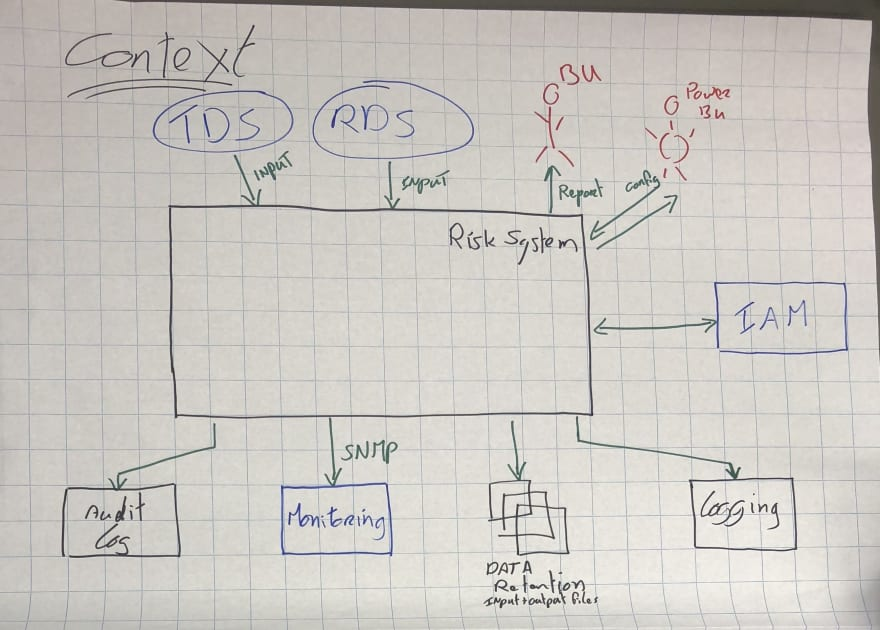

Pomodoro Timer First Brainstorm
Meeting Topic: Brainstorming
Date: April 14, 2024
Attendance
Joseph Jun
Alice Johnson
Bob Smith
Charlie Davis
Debbie Watts
Agenda
Review of last meeting's action items
Discussion on new features for the Pomodoro Timer
Timeline and milestones for the next sprint
Q&A session
Unfinished Business from Last Meeting
Finalize the design mockups for the new timer interface
Resolve pending bugs reported in the last sprint
New Business
Propose integration of analytics for user engagement tracking
Discuss potential partnership opportunities
Miscellaneous
Any team member can bring up additional comments, questions, or concerns during this section.
Visuals Presented During the Meeting

Meeting Recordings
This is an audio version of the meeting recap.
This is an video version of the meeting recap.